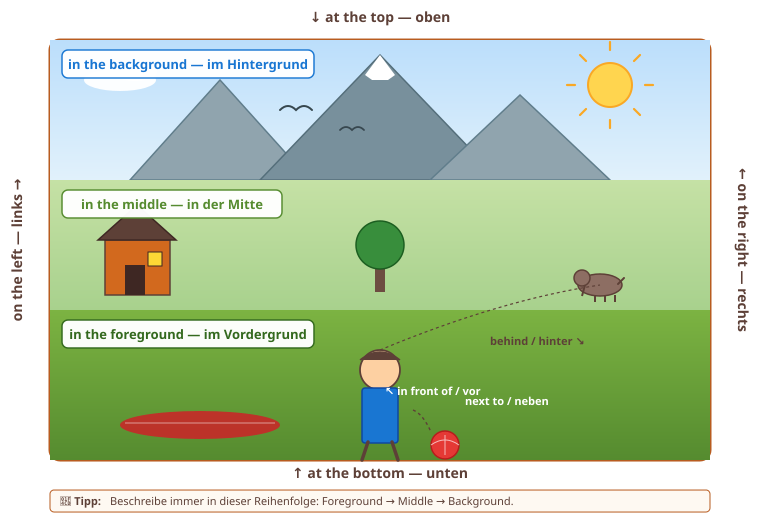
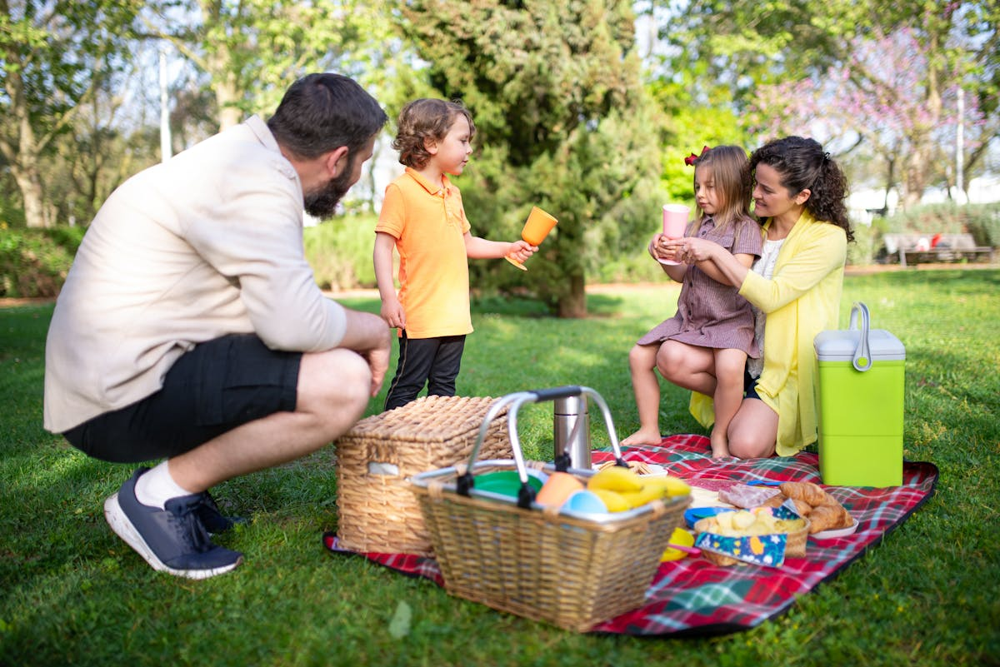
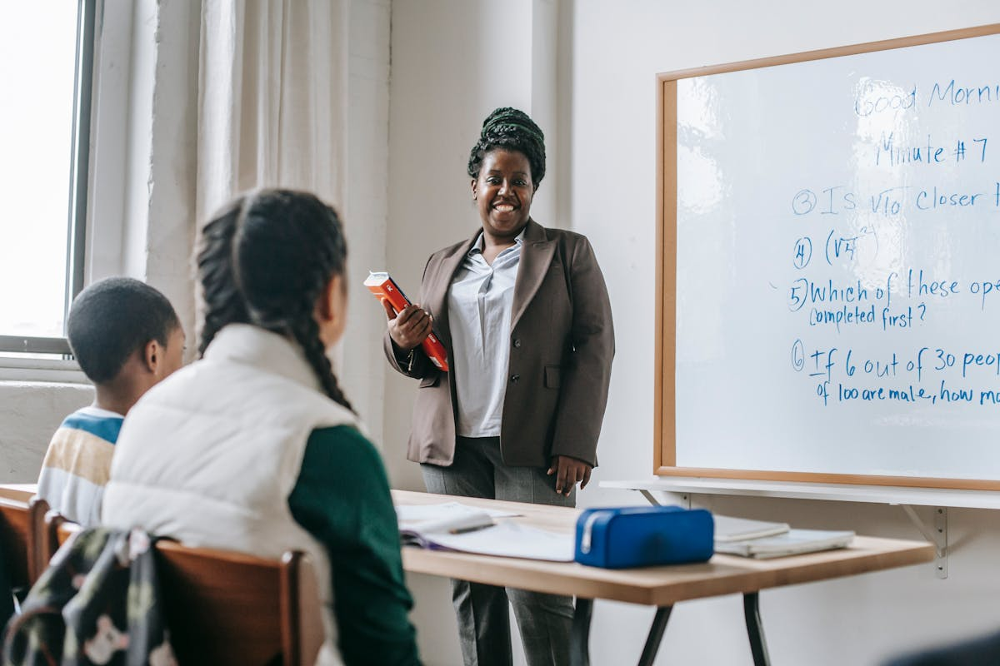
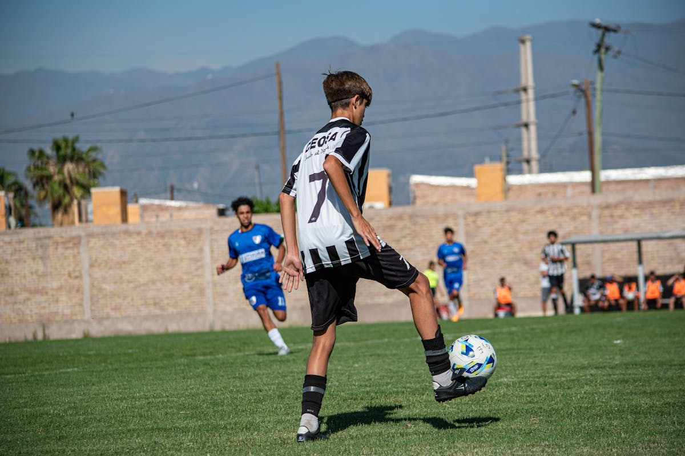

Hake ab, was du sicher kannst. So siehst du, wo du noch üben solltest. Dein Stand wird gespeichert.
0 / 10 Punkte – starte mit dem Üben!
Klassen 5–10 · Vorbereitung & Bewertung
| Englisch | Deutsch |
|---|---|
| The picture shows… | Das Bild zeigt… |
| In the foreground / background | im Vordergrund / Hintergrund |
| On the left / right | links / rechts |
| In the middle | in der Mitte |
| I can see… | Ich kann … sehen |
| It looks like… | Es sieht aus wie… |
| Maybe / Perhaps… | Vielleicht… |
📍 Wo? – Verortung im Bild

Nutze diese Verortungs-Phrasen, um deine Bildbeschreibung zu strukturieren. Reihenfolge: foreground → middle → background.

📷 Bild 1 konnte nicht geladen werden.Beschreibe das Bild auf Englisch (mind. 5 Sätze): Was siehst du im Vordergrund/Hintergrund? Was passiert gerade? Wie wirkt das Bild?
"The picture shows a family in a park. The family is having a picnic. It is a sunny day. In the foreground, I can see a father. The father is sitting on the grass. He is wearing a light shirt and dark shorts. He is smiling at his children. There is a little boy. The boy is wearing an orange shirt and grey trousers. The boy is holding a small cup. Behind them, I can see the mother. The mother has long hair. She is wearing a yellow top. She is sitting on a red blanket. There is a little girl on her lap. The girl is wearing a grey dress with a pink bow. She is also holding a cup. The mother is smiling at her daughter. Next to them, I can see a picnic basket. The basket has bread inside. I can also see a green lunch box. The grass is green. In the background, I can see green trees. The trees are tall. The sun is shining. The weather is very nice. I think the family is having fun. I think it is a Sunday in summer. The family is happy together. I really like this picture because it makes me happy. It reminds me of my own family. We also like to go to the park on sunny days."
Übersetzung: Das Bild zeigt eine Familie in einem Park. Die Familie macht ein Picknick. Es ist ein sonniger Tag. Im Vordergrund sehe ich einen Vater. Der Vater sitzt auf dem Gras. Er trägt ein helles Hemd und eine dunkle Shorts. Er lächelt seine Kinder an. Es gibt einen kleinen Jungen. Der Junge trägt ein oranges Shirt und eine graue Hose. Der Junge hält einen kleinen Becher. Hinter ihnen sehe ich die Mutter. Die Mutter hat lange Haare. Sie trägt ein gelbes Oberteil. Sie sitzt auf einer roten Decke. Auf ihrem Schoß sitzt ein kleines Mädchen. Das Mädchen trägt ein graues Kleid mit einer rosa Schleife. Sie hält auch einen Becher. Die Mutter lächelt ihre Tochter an. Daneben sehe ich einen Picknickkorb. In dem Korb ist Brot. Ich sehe auch eine grüne Lunchbox. Das Gras ist grün. Im Hintergrund sehe ich grüne Bäume. Die Bäume sind hoch. Die Sonne scheint. Das Wetter ist sehr schön. Ich denke, die Familie hat Spaß. Ich denke, es ist ein Sonntag im Sommer. Die Familie ist glücklich zusammen. Ich mag dieses Bild wirklich, weil es mich glücklich macht. Es erinnert mich an meine eigene Familie. Wir gehen auch gern an sonnigen Tagen in den Park.
"The picture shows a family who is enjoying a picnic together in a park on a sunny afternoon. The whole scene looks very peaceful and happy. In the foreground, I can see a father who is squatting on the grass and is smiling warmly at his two young children. He is wearing a casual cream-coloured shirt and dark shorts. The little boy is standing in front of him in a bright orange shirt and grey trousers. He is holding a small cup, maybe with a drink for the picnic. Behind them, the mother is sitting on a red checked blanket. She has long curly hair and is wearing a yellow cardigan. Their little daughter is sitting on her lap and is also holding a cup. The girl is wearing a grey dress with a pink bow in her hair. The mother is smiling at her daughter, while the father is paying full attention to his son. Next to the blanket, there is a wicker picnic basket with bread and other snacks, and a green lunch box. In the background, you can see tall green trees and the sun is shining brightly, so the weather must be perfect for a day outside. I think the picture shows a typical family Sunday because everyone looks calm and content. To me, this is a very happy moment because the parents are spending real quality time with their children. I really like this picture because it makes me think of my own family. We also love to go to the park when the weather is nice."
Übersetzung: Das Bild zeigt eine Familie, die zusammen ein Picknick in einem Park an einem sonnigen Nachmittag genießt. Die ganze Szene wirkt sehr friedlich und glücklich. Im Vordergrund sehe ich einen Vater, der auf dem Gras hockt und seine zwei kleinen Kinder warmherzig anlächelt. Er trägt ein lässiges cremefarbenes Hemd und eine dunkle Shorts. Der kleine Junge steht in einem hellen orangen Shirt und einer grauen Hose vor ihm. Er hält einen kleinen Becher, vielleicht mit einem Getränk für das Picknick. Hinter ihnen sitzt die Mutter auf einer rot karierten Decke. Sie hat lange lockige Haare und trägt eine gelbe Strickjacke. Ihre kleine Tochter sitzt auf ihrem Schoß und hält ebenfalls einen Becher. Das Mädchen trägt ein graues Kleid mit einer rosa Schleife im Haar. Die Mutter lächelt ihre Tochter an, während der Vater seinem Sohn die volle Aufmerksamkeit schenkt. Neben der Decke steht ein Korbpicknickkorb mit Brot und anderen Snacks, sowie eine grüne Lunchbox. Im Hintergrund sieht man hohe grüne Bäume und die Sonne scheint hell, also muss das Wetter perfekt für einen Tag draußen sein. Ich denke, das Bild zeigt einen typischen Familien-Sonntag, weil alle ruhig und zufrieden aussehen. Für mich ist das ein sehr glücklicher Moment, weil die Eltern echte Zeit mit ihren Kindern verbringen. Ich mag dieses Bild wirklich, weil es mich an meine eigene Familie erinnert. Wir gehen auch gern in den Park, wenn das Wetter schön ist.
"The picture shows a young family who appears to be enjoying a relaxing picnic together in a park. At first sight, the whole scene gives a peaceful and almost idyllic impression. In the foreground, the father is squatting on the grass and is paying full attention to his two young children. He is wearing a casual cream-coloured shirt and shorts, which is typical for a warm summer day. His little son, in a bright orange shirt and grey trousers, is standing in front of him and is holding a small drinking cup, perhaps because the family has just sat down for the picnic. Behind them, the mother – with her long curly hair and a yellow cardigan – is sitting on a red checked blanket and is holding her little daughter on her lap. The girl is wearing a grey dress with a delicate pink bow in her hair and is also holding a small cup. Next to the blanket, you can see a wicker picnic basket filled with bread and snacks, as well as a bright green lunch box. In the background, tall green trees frame the scene and the warm sunlight gives the whole picture a calm, almost golden atmosphere. To me, the picture conveys a strong sense of family togetherness and reminds me how important it is to spend quality time with the people we love – without screens or distractions. The picture might have been taken on a sunny weekend in summer when the weather is ideal for outdoor activities. I think the photographer wanted to capture a moment of pure family happiness, and they have succeeded because everyone in the picture seems genuinely content. Pictures like this one make me realise how valuable simple family moments really are, especially in our busy modern lives where we sometimes forget to slow down."
Übersetzung: Das Bild zeigt eine junge Familie, die offensichtlich gemeinsam ein entspanntes Picknick in einem Park genießt. Auf den ersten Blick wirkt die ganze Szene friedlich und fast idyllisch. Im Vordergrund hockt der Vater auf dem Gras und schenkt seinen zwei kleinen Kindern seine volle Aufmerksamkeit. Er trägt ein lässiges cremefarbenes Hemd und eine Shorts, was typisch für einen warmen Sommertag ist. Sein kleiner Sohn in einem hellen orangen Shirt und einer grauen Hose steht vor ihm und hält einen kleinen Trinkbecher in der Hand, vielleicht weil sich die Familie gerade erst zum Picknick hingesetzt hat. Hinter ihnen sitzt die Mutter – mit ihren langen lockigen Haaren und einer gelben Strickjacke – auf einer rot karierten Decke und hält ihre kleine Tochter auf dem Schoß. Das Mädchen trägt ein graues Kleid mit einer zarten rosa Schleife im Haar und hält ebenfalls einen kleinen Becher. Neben der Decke sieht man einen Korbpicknickkorb mit Brot und Snacks sowie eine leuchtend grüne Lunchbox. Im Hintergrund rahmen hohe grüne Bäume die Szene ein, und das warme Sonnenlicht verleiht dem ganzen Bild eine ruhige, fast goldene Atmosphäre. Für mich vermittelt das Bild ein starkes Gefühl von Familien-Zusammenhalt und erinnert mich daran, wie wichtig es ist, gemeinsame Zeit mit den Menschen zu verbringen, die wir lieben – ohne Bildschirme oder Ablenkungen. Das Bild könnte an einem sonnigen Wochenende im Sommer aufgenommen worden sein, wenn das Wetter ideal für Aktivitäten draußen ist. Ich denke, der Fotograf wollte einen Moment puren Familienglücks einfangen, und das ist gelungen, weil alle auf dem Bild wirklich zufrieden aussehen. Solche Bilder machen mir bewusst, wie wertvoll einfache Familienmomente wirklich sind, gerade in unserem hektischen modernen Leben, in dem wir manchmal vergessen, langsamer zu machen.

📷 Bild 2 konnte nicht geladen werden.Was passiert in diesem Klassenzimmer? Beschreibe Personen, Aktionen, Gegenstände – und sag am Ende, wie das Bild auf dich wirkt.
"The picture shows a classroom. It is a normal classroom in a school. In the foreground, I can see two students. The students are sitting at a desk. They are looking at their books. One student is a boy. He is wearing a striped T-shirt. The other student is a girl. She has long dark hair. She is wearing a white vest. They have books and papers on the table. They have a blue pencil case. They are listening to the teacher. Behind the desk, I can see the teacher. The teacher is a young woman. She is wearing a brown blazer and grey trousers. She is holding a red book. The teacher is smiling. She is standing in front of a whiteboard. There are notes on the whiteboard. The notes are in blue. The walls are white. The classroom is bright. I can see a window on the left. There is a curtain on the window. I think the lesson is interesting because the students are concentrated. I think the teacher is friendly. I think it is a normal school day. I like school but it is sometimes hard work. My favourite subject is English."
Übersetzung: Das Bild zeigt ein Klassenzimmer. Es ist ein normales Klassenzimmer in einer Schule. Im Vordergrund sehe ich zwei Schüler. Die Schüler sitzen an einem Tisch. Sie schauen in ihre Bücher. Ein Schüler ist ein Junge. Er trägt ein gestreiftes T-Shirt. Die andere Schülerin ist ein Mädchen. Sie hat lange dunkle Haare. Sie trägt eine weiße Weste. Sie haben Bücher und Papiere auf dem Tisch. Sie haben ein blaues Federmäppchen. Sie hören der Lehrerin zu. Hinter dem Tisch sehe ich die Lehrerin. Die Lehrerin ist eine junge Frau. Sie trägt einen braunen Blazer und eine graue Hose. Sie hält ein rotes Buch. Die Lehrerin lächelt. Sie steht vor einem Whiteboard. Auf dem Whiteboard sind Notizen. Die Notizen sind in blauer Farbe. Die Wände sind weiß. Das Klassenzimmer ist hell. Ich sehe links ein Fenster. Am Fenster ist ein Vorhang. Ich denke, die Stunde ist interessant, weil die Schüler konzentriert sind. Ich denke, die Lehrerin ist freundlich. Ich denke, es ist ein normaler Schultag. Ich mag Schule, aber sie ist manchmal harte Arbeit. Mein Lieblingsfach ist Englisch.
"The picture shows a classroom scene during a normal lesson. The whole atmosphere looks busy but friendly. In the foreground, I can see two students who are sitting at a wooden desk and are working with their books and papers. One of them is a boy in a colourful striped T-shirt. The other one is a girl with long dark hair, who is wearing a white puffer vest over a green sweater. They are listening carefully and have a blue pencil case and some open notes in front of them. Behind their desk, the teacher is standing in front of a large whiteboard. She is a young woman with dark hair, and she is wearing a brown blazer over a white shirt. She is holding a red book in her hand and is smiling at the students, so she seems very friendly and motivated. On the whiteboard, you can see handwritten notes in blue, for example a "Good Morning" message and some warm-up questions, so the teacher must have started the lesson already. There is also a bright window with a curtain on the left, which makes the room very light. I think the picture shows a typical school day because everyone is busy with their tasks. This could be a maths lesson because there are some numbers on the board. To me, the picture is positive because it shows that learning can be calm and concentrated. I really like school days like this because everybody works together and the atmosphere feels productive."
Übersetzung: Das Bild zeigt eine Klassenzimmer-Szene während einer normalen Unterrichtsstunde. Die ganze Atmosphäre wirkt geschäftig, aber freundlich. Im Vordergrund sehe ich zwei Schüler, die an einem Holztisch sitzen und mit ihren Büchern und Papieren arbeiten. Einer von ihnen ist ein Junge in einem bunten gestreiften T-Shirt. Die andere ist ein Mädchen mit langen dunklen Haaren, das eine weiße Daunenweste über einem grünen Pullover trägt. Sie hören aufmerksam zu und haben ein blaues Federmäppchen und einige offene Notizen vor sich. Hinter ihrem Tisch steht die Lehrerin vor einem großen Whiteboard. Sie ist eine junge Frau mit dunklen Haaren und trägt einen braunen Blazer über einem weißen Hemd. Sie hält ein rotes Buch in der Hand und lächelt die Schüler an, also wirkt sie sehr freundlich und motiviert. Auf dem Whiteboard sieht man handschriftliche Notizen in blauer Farbe, zum Beispiel eine "Good Morning"-Begrüßung und einige Aufwärm-Aufgaben, also muss die Lehrerin die Stunde schon begonnen haben. Links sieht man auch ein helles Fenster mit einem Vorhang, das den Raum sehr hell macht. Ich denke, das Bild zeigt einen typischen Schultag, weil alle mit ihren Aufgaben beschäftigt sind. Das könnte eine Mathestunde sein, weil Zahlen an der Tafel stehen. Für mich ist das Bild positiv, weil es zeigt, dass Lernen ruhig und konzentriert sein kann. Ich mag solche Schultage wirklich, weil alle zusammenarbeiten und die Atmosphäre produktiv wirkt.
"The picture shows what looks like a typical classroom scene during a regular lesson, probably at a secondary school. At first glance, the whole atmosphere appears busy but well-organised. In the foreground, two students are sitting at a wooden desk while they are working concentratedly with their books and notes. One of them is a boy who is wearing a colourful striped T-shirt; the other is a girl with long dark hair, who is wearing a white puffer vest over a green sweater. They are clearly focused on the lesson, and there is a blue pencil case and some open papers in front of them on the desk. Behind their desk, the teacher – a young woman with dark hair, dressed in a brown blazer over a white shirt and grey trousers – is standing in front of a large whiteboard. She is holding a red book in her hand and is smiling warmly, which suggests that the atmosphere in this classroom is positive and motivating. On the whiteboard, you can see handwritten blue notes, for example a "Good Morning" message and several short warm-up questions, which suggests that the lesson has already been going on for a while. To the left, a bright window with a light curtain lets the morning sun into the room, making the whole classroom look welcoming. The classroom appears bright, well-organised and friendly, and to me the students seem highly engaged in what they are doing. Overall, the picture probably shows an ordinary school day, perhaps a maths or English lesson at a secondary school. I find this picture quite positive because it shows that learning can be enjoyable when the atmosphere is right. It also reminds me how much we sometimes take normal school days for granted, even though they are an important part of growing up and preparing for our future. Personally, I value lessons like this because they help us build skills we will definitely need later in life."
Übersetzung: Das Bild zeigt offensichtlich eine typische Klassenzimmer-Szene während einer normalen Unterrichtsstunde, wahrscheinlich an einer weiterführenden Schule. Auf den ersten Blick wirkt die ganze Atmosphäre geschäftig, aber gut organisiert. Im Vordergrund sitzen zwei Schüler an einem Holztisch, während sie konzentriert mit ihren Büchern und Notizen arbeiten. Einer von ihnen ist ein Junge, der ein buntes gestreiftes T-Shirt trägt; die andere ist ein Mädchen mit langen dunklen Haaren, das eine weiße Daunenweste über einem grünen Pullover trägt. Sie sind eindeutig auf den Unterricht fokussiert, und vor ihnen liegen ein blaues Federmäppchen und einige offene Papiere auf dem Tisch. Hinter ihrem Tisch steht die Lehrerin – eine junge Frau mit dunklen Haaren in einem braunen Blazer über einem weißen Hemd und einer grauen Hose – vor einem großen Whiteboard. Sie hält ein rotes Buch in der Hand und lächelt warmherzig, was darauf hindeutet, dass die Atmosphäre in diesem Klassenraum positiv und motivierend ist. Auf dem Whiteboard sieht man handschriftliche Notizen in blauer Farbe, zum Beispiel eine "Good Morning"-Begrüßung und mehrere kurze Aufwärm-Fragen, was darauf hindeutet, dass die Stunde schon eine Weile läuft. Links lässt ein helles Fenster mit einem leichten Vorhang die Morgensonne in den Raum, sodass der ganze Klassenraum einladend wirkt. Das Klassenzimmer wirkt hell, gut organisiert und freundlich, und für mich scheinen die Schüler sehr engagiert bei dem zu sein, was sie tun. Insgesamt zeigt das Bild wahrscheinlich einen normalen Schultag, vielleicht eine Mathe- oder Englischstunde an einer weiterführenden Schule. Ich finde dieses Bild ziemlich positiv, weil es zeigt, dass Lernen Spaß machen kann, wenn die Atmosphäre stimmt. Es erinnert mich auch daran, wie sehr wir normale Schultage manchmal als selbstverständlich nehmen, obwohl sie ein wichtiger Teil des Erwachsenwerdens und der Vorbereitung auf unsere Zukunft sind. Persönlich schätze ich solche Stunden, weil sie uns helfen, Fähigkeiten aufzubauen, die wir später im Leben definitiv brauchen werden.

📷 Bild 3 konnte nicht geladen werden.Beschreibe diese Sport-Szene. Was machen die Personen? Wo sind sie? Welche Stimmung hat das Bild?
"The picture shows a football match. It is a sunny day. In the foreground, a young player is on the grass. He is playing with the ball. The ball is white, blue and yellow. He is wearing a sports kit. The shirt is black and white. The shirt has the number seven on the back. The shorts are black. The socks are black. He has short brown hair. He is using his foot. He looks fast and strong. Behind him, I can see another player. The other player is wearing a blue shirt. The blue player is running. He wants the ball too. The grass is green and short. The lines on the pitch are white. In the background, I can see a stone wall. I can see palm trees on the left. I can see mountains in the distance. The sky is blue. There are no clouds. The weather is very nice. I think the player likes football. I think he plays in a team. He plays with his friends. I think they have a lot of fun together. I love football too. My favourite team is Bayern. I play football every Wednesday. Sport is good because it keeps you healthy and happy."
Übersetzung: Das Bild zeigt ein Fußballspiel. Es ist ein sonniger Tag. Im Vordergrund ist ein junger Spieler auf dem Gras. Er spielt mit dem Ball. Der Ball ist weiß, blau und gelb. Er trägt Sportkleidung. Das Shirt ist schwarz und weiß. Das Shirt hat die Nummer sieben auf dem Rücken. Die Shorts sind schwarz. Die Socken sind schwarz. Er hat kurze braune Haare. Er benutzt seinen Fuß. Er sieht schnell und stark aus. Hinter ihm sehe ich einen anderen Spieler. Der andere Spieler trägt ein blaues Shirt. Der blaue Spieler läuft. Er will den Ball auch. Das Gras ist grün und kurz. Die Linien auf dem Platz sind weiß. Im Hintergrund sehe ich eine Steinmauer. Ich sehe links Palmen. Ich sehe Berge in der Ferne. Der Himmel ist blau. Es gibt keine Wolken. Das Wetter ist sehr schön. Ich denke, der Spieler mag Fußball. Ich denke, er spielt in einer Mannschaft. Er spielt mit seinen Freunden. Ich denke, sie haben zusammen viel Spaß. Ich liebe Fußball auch. Meine Lieblingsmannschaft ist Bayern. Ich spiele jeden Mittwoch Fußball. Sport ist gut, weil er dich gesund und glücklich hält.
"The picture shows a football match on a sunny afternoon. The whole scene looks very dynamic and exciting. In the foreground, a young player is controlling the ball with his foot in mid-air. He is wearing a black-and-white striped shirt with the number seven on the back, black shorts and dark socks. His body shows that he is very focused, maybe because he wants to keep the ball away from his opponent. He has short brown hair and looks like he is around fifteen years old. Behind him, I can see another player who is running fast in a blue-and-white striped shirt. He is from another team and wants to get the ball. There are also lines on the pitch, which means this is a real football game and not just a training. The grass is bright green and well cut, so the pitch is clearly an official sports ground. In the background, you can see a brick wall, some palm trees on the left, an electricity pole on the right and even mountains in the distance. The sun is shining brightly and there are no clouds in the sky, so the weather is perfect for sport. The picture looks very dynamic because it captures the moment just before something exciting might happen, for example a clever pass or a quick tackle. I think the player really enjoys what he is doing because his body shows total concentration. This could be a match in a youth team during the summer. To me, the picture shows how much fun team sports can be, especially when you are doing something you really love. I also play football twice a week with my friends, so I can understand how the player is feeling in this picture."
Übersetzung: Das Bild zeigt ein Fußballspiel an einem sonnigen Nachmittag. Die ganze Szene wirkt sehr dynamisch und aufregend. Im Vordergrund kontrolliert ein junger Spieler den Ball mit dem Fuß in der Luft. Er trägt ein schwarz-weiß gestreiftes Trikot mit der Nummer sieben auf dem Rücken, schwarze Shorts und dunkle Socken. Sein Körper zeigt, dass er sehr konzentriert ist, vielleicht weil er den Ball von seinem Gegenspieler fernhalten möchte. Er hat kurze braune Haare und sieht aus, als wäre er etwa fünfzehn Jahre alt. Hinter ihm sehe ich einen anderen Spieler, der in einem blau-weiß gestreiften Trikot schnell läuft. Er ist aus einer anderen Mannschaft und will den Ball bekommen. Auf dem Platz sieht man auch Linien, das heißt, es ist ein richtiges Spiel und kein Training. Das Gras ist leuchtend grün und gut gemäht, also ist der Platz klar ein offizieller Sportplatz. Im Hintergrund sieht man eine Backsteinmauer, links einige Palmen, rechts einen Strommast und sogar Berge in der Ferne. Die Sonne scheint hell und am Himmel sind keine Wolken, also ist das Wetter perfekt für Sport. Das Bild wirkt sehr dynamisch, weil es den Moment einfängt, kurz bevor etwas Spannendes passieren könnte, zum Beispiel ein cleverer Pass oder eine schnelle Grätsche. Ich denke, der Spieler hat wirklich Spaß an dem, was er tut, weil sein Körper totale Konzentration zeigt. Das könnte ein Spiel in einer Jugendmannschaft im Sommer sein. Für mich zeigt das Bild, wie viel Spaß Mannschaftssport machen kann, vor allem wenn man etwas tut, das man wirklich liebt. Ich spiele auch zweimal pro Woche Fußball mit meinen Freunden, also kann ich verstehen, wie sich der Spieler auf diesem Bild fühlt.
"The picture shows what appears to be an exciting moment during a youth football match on a sunny summer afternoon. At first glance, the whole scene radiates energy and movement. In the foreground, a young player is controlling the ball in mid-air with the inside of his foot, and his body posture clearly shows a great deal of focus and determination. He is wearing a black-and-white striped jersey with the number seven on the back, dark shorts and dark socks – a typical kit for amateur football. His position suggests that he is highly trained and used to playing under pressure. Behind him, you can make out another player in a blue-and-white striped jersey, who is sprinting towards him to challenge for the ball. The pitch has clearly visible white lines, which means this is probably an official match rather than a training session. The grass is bright green and well-maintained. In the background, you can see a brick stadium wall, palm trees on the left, an electricity pole on the right, and even a row of mountains in the distance, which gives the picture a wide and open atmosphere. The sun is shining brightly and there are barely any clouds in the sky, so the weather conditions are absolutely ideal for sport. The picture has a very dynamic atmosphere because it captures the exact moment just before something might happen – perhaps a clever pass, a successful turn or a quick tackle by the defender. I think the player really enjoys what he is doing because his entire body language is full of passion. This could be a scene from a youth tournament where the players are giving their best to impress the coaches and their families. Personally, I find the picture inspiring because it shows how sport can bring out our energy, focus and joy at the same time. It also reminds me how important physical activity is, especially for young people who spend so much time looking at screens. Pictures like this one can motivate others to leave the sofa and join a club themselves."
Übersetzung: Das Bild zeigt offensichtlich einen aufregenden Moment während eines Jugend-Fußballspiels an einem sonnigen Sommernachmittag. Auf den ersten Blick strahlt die ganze Szene Energie und Bewegung aus. Im Vordergrund kontrolliert ein junger Spieler den Ball in der Luft mit der Innenseite seines Fußes, und seine Körperhaltung zeigt deutlich viel Konzentration und Entschlossenheit. Er trägt ein schwarz-weiß gestreiftes Trikot mit der Nummer sieben auf dem Rücken, dunkle Shorts und dunkle Socken – eine typische Ausrüstung für Amateurfußball. Seine Position deutet darauf hin, dass er gut trainiert ist und es gewohnt ist, unter Druck zu spielen. Hinter ihm kann man einen anderen Spieler in einem blau-weiß gestreiften Trikot erkennen, der auf ihn zusprintet, um an den Ball zu kommen. Der Platz hat deutlich sichtbare weiße Linien, was bedeutet, dass es sich wahrscheinlich um ein offizielles Spiel und nicht nur um ein Training handelt. Das Gras ist leuchtend grün und gut gepflegt. Im Hintergrund sieht man eine Backstein-Stadionmauer, links Palmen, rechts einen Strommast und sogar eine Bergkette in der Ferne, was dem Bild eine weite und offene Atmosphäre verleiht. Die Sonne scheint hell und am Himmel sind kaum Wolken, also sind die Bedingungen absolut ideal für Sport. Das Bild hat eine sehr dynamische Atmosphäre, weil es genau den Moment einfängt, kurz bevor etwas passieren könnte – vielleicht ein cleverer Pass, eine gelungene Drehung oder eine schnelle Grätsche des Gegenspielers. Ich denke, der Spieler hat wirklich Spaß an dem, was er tut, weil seine ganze Körpersprache voller Leidenschaft ist. Das könnte eine Szene von einem Jugendturnier sein, bei dem die Spieler ihr Bestes geben, um die Trainer und ihre Familien zu beeindrucken. Persönlich finde ich das Bild inspirierend, weil es zeigt, wie Sport gleichzeitig unsere Energie, Konzentration und Freude wecken kann. Es erinnert mich auch daran, wie wichtig körperliche Aktivität ist, besonders für junge Menschen, die so viel Zeit am Bildschirm verbringen. Solche Bilder können andere motivieren, das Sofa zu verlassen und selbst einem Verein beizutreten.
Bei Bildbeschreibungen brauchst du beide Zeiten richtig. Welche Form passt?
| Englisch | Deutsch |
|---|---|
| I think… / In my opinion… | Ich denke… / Meiner Meinung nach… |
| I agree / I don't agree | Ich stimme zu / nicht zu |
| You're right, but… | Du hast recht, aber… |
| Why don't we…? | Warum machen wir nicht…? |
| How about…? | Wie wär's mit…? |
| Let's… | Lass uns… |
| Sounds good / OK with me! | Klingt gut / einverstanden! |
Situation 1: Plant gemeinsam, was ihr am Wochenende macht.
Aufgabe: Schlage eine Aktivität vor, dein Partner schlägt eine andere vor – einigt euch.
Situation 2: Entscheidet, welchen Film ihr gemeinsam schaut.
Aufgabe: Jeder schlägt ein Genre vor, ihr begründet und einigt euch.
Situation 3: Sprecht über euer Lieblingshobby und vergleicht eure Hobbys.
Aufgabe: Stellt euer Hobby vor, fragt nach, vergleicht.
Klicke abwechselnd ein englisches und ein deutsches Item an, um Paare zu bilden. Wenig Versuche = besser!
1Teil 1: Zusammenhängendes Sprechen
z.B. Bildbeschreibung, Vortrag, Monolog. Max. 25 Punkte = Inhalt (0–10) + Sprache (0–15).
Inhaltliche Leistung 0–10 Pkt.
Sprachliche Leistung 0–15 Pkt.
4 Sub-Kriterien à 0–4 Punkte. Die Lehrkraft trifft die Gesamteinschätzung 0–15.
2Teil 2: An Gesprächen teilnehmen
Dialog mit Partner / Lehrkraft. Max. 25 Punkte = Inhalt (0–10) + Sprache (0–15).
Inhaltliche Leistung 0–10 Pkt.
Sprachliche Leistung 0–15 Pkt.
4 Sub-Kriterien à 0–4 Punkte.
| Note | Punkte |
|---|---|
| 1 (sehr gut) | 50 – 44 |
| 2 (gut) | 43 – 37 |
| 3 (befriedigend) | 36 – 30 |
| 4 (ausreichend) | 29 – 23 |
| 5 (mangelhaft) | 22 – 10 |
| 6 (ungenügend) | 9 – 0 |
Bewerte ehrlich, wie gut du in jedem Bereich bist. So siehst du, wo du stehst und wo du noch üben solltest.
📍 Teil 1: Zusammenhängendes Sprechen0 / 25 Pkt.
Inhaltliche Leistung
Sprache: Präsentationskompetenz
Sprache: Aussprache & Intonation
Sprache: Wortschatz
Sprache: Grammatische Strukturen
Sprache gesamt (4 × Sub-Werte = 0–16, gedeckelt auf 15): 0 / 15 Pkt.
📍 Teil 2: An Gesprächen teilnehmen0 / 25 Pkt.
Inhaltliche Leistung
Sprache: Diskurskompetenz
Sprache: Aussprache & Intonation
Sprache: Wortschatz
Sprache: Grammatische Strukturen
Sprache gesamt: 0 / 15 Pkt.